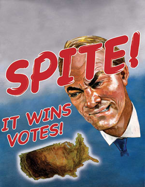

|

The power and politics of Spite
A distressing but plausible theory as to why people vote against their own interests.
- - - - - - - - - -
by Mark Ames
 T CAME ON SUDDENLY and without warning. Fuck the Democrats. Fuck the liberals. I hope Bush wins. I hope Bush steals another election and urinates into everyone's wounds… T CAME ON SUDDENLY and without warning. Fuck the Democrats. Fuck the liberals. I hope Bush wins. I hope Bush steals another election and urinates into everyone's wounds…
This interior rant lasted for a good five minutes before I snapped out of it. The realization that some pro-Republican sentiment lurks inside of me was enough to make me want to stick my head in the oven. Or throw myself out the window like the possessed priest at the end of The Exorcist.
What inspired this crazed outburst wasn't any love for Bush. It was an instinctual reaction to a tonal shift I've detected among the American left. They're losing that brave, cornered, hysterical tone that I've identified with, a tone that came from years of increasing marginalization combined with a sense that the whole country had gone completely insane.
For the first time in almost 30 years, the left has a chance to occupy the reality vacuum that opened up after the big barbecue in Fallujah. The left can sense that their time may have finally arrived, and they're prematurely settling into their new role as saviors of the national soul, with their former hysteria already reverting to a smug, nurturing tone. The once-vicious humor, born of desperation and hatred, is again becoming nauseatingly didactic and responsible. This is a disaster. The left seems to be buying into the high school civics teacher's idiotic lie that "you can't just be de-structive, you have to be con-structive as well." Yeah, and did you know that girls prefer shy, sensitive boys?
What's worse is that the new smug tone is being accompanied by high-profile outbursts of fake rage. Yesterday's genuine fury has been hijacked and reified by painted-up frauds like Al Gore and Nancy Pelosi, who look about as comfortable feigning rage as Rumsfeld looked when he tried to squirt a few tears before Congress over Abu Ghraib.
Some people say that the Democrats are actually getting bolder and more vicious. I don't buy it. What Gore and Pelosi and the others on their bandwagon are really trying to do is snuff out the real rage before it spreads and threatens their fake opposition. It's a classic strategy in big politics: Co-opt the opposition, suck the life out of it and dump its dried-out shell on the side of the freeway, where it can never bother you again.
This is America, not Denmark. In this country, tens of millions of people choose to watch FoxNews not simply because Americans are credulous idiots or at the behest of some right-wing corporate cabal, but because average Americans respect viciousness. They are attracted to viciousness for a lot of reasons. In part, it reminds them of their bosses, whom they secretly adore. Americans hate themselves for the way they behave in public, always smiling and nodding their heads with accompanying really?s and uh-huhs to show that they're listening to the other person, never having the guts to say what they really feel. So they vicariously scream and bully others into submission through right-wing surrogate-brutes. Spending time watching Sean Hannity is enough for your average American white male to feel less cowardly than he really is.
The left won't accept this awful truth about the American soul, a beast that they believe they can fix "if only the people knew the Truth."
But what if the Truth is that Americans don't want to know the Truth? What if Americans consciously choose lies over truth when given the chance—and not even very interesting lies, but rather the blandest, dumbest and meanest lies? What if Americans are not a likeable people? The left's wires short-circuit when confronted with this terrible possibility; the right, on the other hand, warmly embraces Middle America's rank soul and exploits it to their full advantage. The Republicans know Americans better than the left. They know that it's not so much Goering's famous "bigger lie" that works here, but the dumber the lie, the more they want to hear it repeated.
And this leads to another truth that the left still has trouble understanding: Millions of Americans, particularly white males, don't vote for what's in their so-called best interests. Thomas Frank recently attacked this riddle in his new book What's the Matter with Kansas? but he fails to answer his own question. He can't, in fact, because his is a flawed premise. Frank, who is at his best when he's just vicious, still clings to the comforting theory that Middle Americans are being duped by an evil corporate-political machine that subtly but masterfully manipulates the psychological levers of cultural backlash, implying that if average Americans were left to their own devices, they would somehow make entirely rational, enlightened choices and elect sensible New Deal Democrats every time. This puts Frank in a bind he never quite gets out of. Like all lefties, he is incapable of taking his ruthless analysis beyond a certain point.
The reason is simple. The underlying major premise of humanist-leftist ideology states that people are intrinsically sympathetic. If people are defiantly mean and craven, the humanist-left structure falters. "Why the fuck should I bother fighting for Middle Americans," they ask, "if they're just as loathsome, in their own petty way, as their exploiters, with whom they actively collaborate?"
Rather than grapple with that dilemma, the left pretends it doesn't exist. This is why they will forever struggle to understand the one overriding mystery of why so many working- and middle-class white males vote against their own best interests.
CAN TELL YOU WHY. They do so out of spite. Put your ear to the ground in this country, and you'll hear the toxic spite churning. It's partly the result of commercial propaganda and sexual desperation—a desperation far more common than is admitted. If you didn't know anything about how America's propaganda worked, you'd think that every citizen here experienced four-dimensional multiple orgasms with beautiful, creative, equally satisfied partners, morning, noon and night.
The wretched truth is that America is an erogenous no man's land. Most white males here (at least the straight ones) have either dismal sex lives or no sex lives at all. As bad as this hurts, the pain is compounded every time you expose yourself to the cultural lies that await you at every turn—that is, every waking hour and during deep REM sleep, when the subliminal messages kick in. This wretchedness leads to a desire for vengeance, to externalize the inner famine—it leads directly to the Republican camp.
Spite-voters also lack the sense that they have any stake in the future of the country. There is something proprietary implied in all of the didacticism and concern found in the left's tone. The left struggles to understand why so many non-millionaire Americans vote Republican, and yet they rarely ask themselves why so many millionaires, particularly the most beautiful and privileged millionaires in Manhattan and Los Angeles, vote for the Democrats.
I can answer both. Rich, beautiful, coastal types are liberal precisely because their lives are so wonderful. They want to preserve their lives exactly as they are. If I were a rich movie star, I'd vote for peace and poverty relief. War and domestic insurrection are the greatest threats to their already-perfect lives—why mess with it? This rational fear of the peasantry is frequently misinterpreted as rich guilt, but that's not the case. They just want to pay off all the have-nots to keep them from storming their manors and impaling them on stakes.
Republican elites don't set off the spite glands in the same way, and it's not only because of a sinister right-wing propaganda machine. Take a look at a photo of the late billionaire Sam Walton, a dried-out Calvinist in a baseball cap and business suit, and you'll see why. If Republican billionaires enjoy their wealth, they sure as hell hide it well. As far as one can tell, Republican billionaires genuinely like working 18-hour days in offices. Their idea of having fun is a day on the golf green (a game as slow and frustrating as a day in the office) or attending conferences with other sleazy, cheerless Calvinist billionaires. If that's what all their wealth got them, let 'em have it—so says the spite bloc. This explains why the Republican elite—the only true and all-powerful elite in America today—is not considered an "elitist" class in the spleens of the white male have-nots. Elitism as defined today is a synonym for "happy," not "rich" or "powerful." Happiness is the scarcest resource of all, not money. And the happy supply has been cornered by the beautiful, famous and wealthy coastal elite, the ones who never age, and who are just so damned concerned for the have-nots' well-being. In that sense, you can see how the Republicans were able to successfully manipulate the meaning of "elitism" to suit their needs. They weren't just selling dogshit to the credulous masses; they were selling pancreatic balm to the needy.
At the other end of the economic spectrum, non-millionaires who vote Republican, the so-called "Reagan Democrats," know that the country is not theirs. They are mere wage-slave fodder, so their only hope is to vote for someone who makes the very happiest people's lives a little less happy. If I'm an obese 40-something white male living in Ohio or Nevada, locked into a permanent struggle with foreclosure, child support payments and outsourcing threats, then I'm going to vote for the guy who delivers a big greasy portion of misery to the Sarandon-Robbins dining room table, then brags about it on FoxNews. Even if it means hurting myself in the process.
This explains the mystery of why Bush still has a chance of winning in November, even though most Americans acknowledge that his presidency is little more than a series of slapstick fuck-ups with apocalyptic consequences. Inspector Clouseau meets the Book of Revelations. Close to half of this country will support Bush simply to spite that part of America that it sees as most threatened by the Iraq debacle. If the empire ends up collapsing into that filthy, sizzling hellhole in the desert, if more terrorists are created to help set off dirty bombs in Manhattan or Los Angeles, our spiteful voter has a real chance of finally achieving some empowerment.
It's simple mathematics: Bring down the coastal elite and the single 40-something Ohio salesman might actually matter. And if they're not brought down, but instead remain in a constant state of indigestion over policies that could ruin them at any time? Well, that's still better than nothing.
This is why all the talk about "personal interests" is a sham. Spite voters don't care solely about their own interests, nor are they bothered by how "the left talks as if they know what everyone's best interests are," an argument you often hear from the whiney right. What bothers spiters is that the left really does know what's in their interests. If you're miserable, you don't want to be told what's best for you by someone who's correct—it's sort of like being occupied by a foreign army with good intentions. You'd rather fuck things up on your own, something you're quite good at, and bring others down with you.
Spite voting is mostly a white male phenomenon, which is why a majority of white males vote Republican. It comes from a toxic mix of thwarted expectations, cowardice and anomie that is unique to the white American male experience.
 PITE VOTING is not just an American problem; it's a flaw in democracies everywhere. When I lived in Kosovo in the late summer of 2000, I asked my Serb friends there if they thought Milosevic was going to win the upcoming Serbian presidential elections. Most were pessimistic. They told me of friends, young people even, who voted for Milosevic "just out of spite." The Serbian spite voters believed that if the opposition got their way and Serbia became as tame and civilized as Luxembourg, all those college-educated Otpor protestors and pro-Western intellectuals would simply take the privileges for themselves. They didn't want caste-based happiness and its accompanying propaganda, so they voted for Milosevic precisely because he was wrong, because he was a vote against hope. Under Milosevic, nearly every Serb was fucked equally, and that suited some people, particularly some Serbian males, just fine. PITE VOTING is not just an American problem; it's a flaw in democracies everywhere. When I lived in Kosovo in the late summer of 2000, I asked my Serb friends there if they thought Milosevic was going to win the upcoming Serbian presidential elections. Most were pessimistic. They told me of friends, young people even, who voted for Milosevic "just out of spite." The Serbian spite voters believed that if the opposition got their way and Serbia became as tame and civilized as Luxembourg, all those college-educated Otpor protestors and pro-Western intellectuals would simply take the privileges for themselves. They didn't want caste-based happiness and its accompanying propaganda, so they voted for Milosevic precisely because he was wrong, because he was a vote against hope. Under Milosevic, nearly every Serb was fucked equally, and that suited some people, particularly some Serbian males, just fine.
George W. Bush and Milosevic have a lot in common. Before Milosevic, the Serbs were loved by everyone in the West. But as their third-way socialist economy crumbled and they perceived a threat from local Muslim populations, Milosevic pandered to the people's darkest fears. He dragged them into what we call "wars of choice" and turned the international community against them, to the point where Serbia was the most reviled nation in Europe. He attacked the U.N. and the West as anti-Serb, and kept the country in a permanent state of war and fear and isolation. Like Bush, Milosevic destroyed his little empire almost as quickly as he assumed control of it. It took a decade and massive covert and overt Western efforts to finally get Milosevic out of power and into the dock. For many a spiteful Serb male, those years of decline, hatred and isolation were glorious years indeed.
Unfortunately, the chances of the international community putting their blue helmets where their mouths are to overthrow Bush, liberating us against our own bad judgment, are nil to negative-nil. But all's not lost. There is still a chance to get the spite vote to defect. Kerry might be the right candidate to blunt some of Bush's natural spite-support.
One look at Bush and you'll know why: Bush is the privileged frat-boy/jock asshole that every spiteful male recognizes from his school days. Spiteful males may have supported him in the past, but only because Bush's cartoonish stupidity gave a daily dose of stomach cramps to the responsible, concerned Americans who voted for Gore. And really, what white male in his spiteful mind could possibly have voted for Al Gore, with that pained "Am I pleasing you?" smile he beamed at you? Spiteful white males don't want to be pleased—they want other people to be displeased.
Kerry, on the other hand, has that long graveyard face, and a dull, 1940s delivery, making it hard for the spiteful voter to hate him instinctively. In fact, with Kerry, the spleen just goes to sleep.
If there were one perfect spite president, it was Richard Nixon. He looked mean, spoke mean and stomped on the hippies who were having too many orgasms, the last real orgasms this country ever witnessed. Kerry shares roughly the same repulsive physical qualities as Nixon, repulsive in the sense that he doesn't look like a tv anchor—which is a good thing. And while Kerry may not stomp on hippies, it's hard to imagine that he ever enjoyed a single minute of his life. There is nothing about Kerry to make a man envious, even if he is rich and famous. You get the sense that Kerry's greatest joy in life is sitting alone in his office at the end of a long day, thumbing through his fresh collection of business cards and coveting the connections that each one brings. When it comes to the spite intangibles, Kerry is the closest thing to Nixon that the Democrats have ever fielded.
Kerry won't draw the spite vote, but his creepy face, along with Bush's jock glow, just might neutralize it—out of spite. All the left has to do is not stir up the wrong bile. That means keeping the focus on Bush's corporate-jock clique, and keeping it mean. Just don't let us know how responsible and concerned you are. Don't let us know that you care about us, and the election is all yours.
Reprinted from The New York Press

|